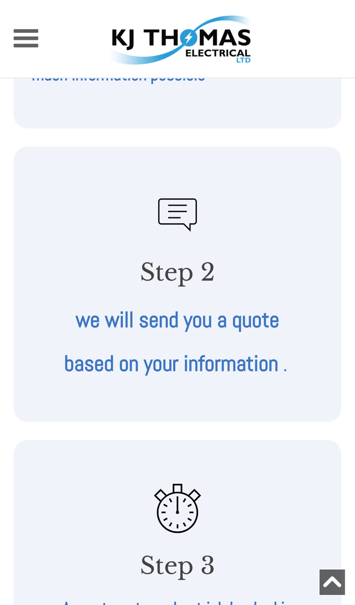

KJ Thomas Electrical: quotes out faster, jobs booked sooner
I went through your website on a phone, the way a homeowner needing a rewire or a condition report would, and read your homepage, contact page, reviews and infrared panels page. Your three steps make it clear how to get a job booked. Where I think you'd save time, and win more jobs, is between the form and the booked-in date.
What's already working
Three things I'd change
Let customers send photos with the form
Step 1 says "Fill out the Contact form including as much information possible", and Step 2 "we will send you a quote based on your information". The form asks for a name, address, email, phone and message, with no way to add a photo.

A photo of the fuse board or the room often tells you a lot about a job. Without one, it can take a call or a visit before you can price it.
- The form asks what the job is (rewire, kitchen or bathroom, lighting, EICR, infrared panels) and lets them add photos from their phone.
- It asks the questions you'd ask anyway, like the size of the house and when they need the work done.
- You get one tidy request with the photos, ready to price from your phone.
Accept the quote and pick a date
Step 3 on your homepage is "Accept quote and get job booked in". Nothing on the site lets a customer accept a quote or choose a day.
Each yes can mean more calls or texts to find a day that suits, often while you're on another job.
- Your quote goes out as a link they can read on their phone.
- They tap to accept and pick from the days you have free.
- The job goes in your calendar, and anyone who hasn't replied gets a friendly nudge after a few days.
Text back the calls you miss
Your one number is a mobile, +44 7730 533592, and your homepage says "by using me".
When you're up a ladder or under a floor, calls go unanswered, and someone needing an electrician may simply ring the next one.
- Your number becomes a tap-to-call button on every page.
- A missed call gets a text back within a minute: sorry I missed you, I'm on a job, with a link to your quote form.
- At the end of the day you see every missed caller in one list, with what they wanted.
Your website, answering for you
An assistant that answers the questions you get asked again and again, at any hour. These answers come only from your own website: your services, your guarantee and your infrared panels page.
Anything it can't answer, it passes to you with the customer's details.
What happens next
For five local businesses I'm setting up one of these for free, in return for an honest review. Pick whichever would help most.
I'm Tom Williams and I run Tomoni-AI. If a 20-minute chat would help, reply to my email or give me a ring.
Call 07971 512158Email Tom